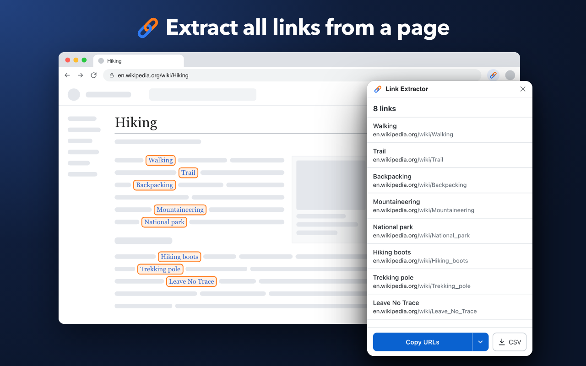

Ne yapar?

Link Extractor, baktığınız sayfanın linklerini listeleyen ücretsiz bir Chrome uzantısıdır. Simgesine tıklayın; yan panel tüm linkleri sayfa sırasında, tam URL ve yanında link metniyle gösterir. Tekrar eden linkler sayaçlı tek satırda birleşir. Listede arama yapabilir, alan adına, türe (sayfalar, dosyalar, e-posta, telefon), iç veya dış linklere ve nofollow, sponsored ya da ugc'ye göre filtreleyebilirsiniz. Google, Bing veya Facebook'un yönlendirme linkleri, gittikleri adresle gösterilir. Sonra URL'leri kopyalayın ya da Excel için CSV indirin. Uzun listeler kesilmez: on binlerce linki olan bir sayfa da eksiksiz kopyalanır ve dışa aktarılır. Sayfayı kendi tarayıcınızda, sizin gördüğünüz haliyle okur; bu yüzden JavaScript'in eklediği linkler ve giriş yaptığınız sayfalar da listeye girer.


Neler yapabilir?
- Açık sekmenin tüm linkleri, sayfa sırasında, tam URL ve link metniyle
- Tekrarlar sayaçlı tek satırda birleşir
- Arama ve filtreler: alan adı, tür, iç veya dış, nofollow, sponsored, ugc
- URL'leri veya Excel ile Google E-Tablolar'a sütun sütun yapışan bir tabloyu kopyalama
- Excel'de bozuk karakter olmadan açılan CSV dosyası
- Google, Bing veya Facebook yönlendirme linkleri yerine gerçek adresler; isterseniz utm etiketleri kaldırılır
- Sayfanın seçtiğiniz bölümündeki linkler ve Google ya da Bing'de yalnızca sonuçlar
- Ücretsiz, hesap yok; linkler tarayıcınızdan çıkmaz
Rehberler
- Sayfadaki tüm linkler Excel'de açılan CSV'ye nasıl aktarılır
- UTM etiketleri nasıl kaldırılır, yönlendirme linkleri nasıl çözülür
- 10.000'den fazla linki olan büyük bir sayfadaki tüm linkler nasıl çıkarılır
- Sayfadaki e-posta, telefon ve PDF linkleri nasıl çıkarılır
- Link metni ve URL çiftleri sayfa sırasıyla Excel'e nasıl kopyalanır
Sık sorulan sorular
Sayfadaki tüm linkleri tarayıcımdan CSV'ye nasıl aktarırım?
Sayfayı açın, Link Extractor simgesine tıklayın (ya da kısayola basın: varsayılan Alt+Shift+L, Mac'te Ctrl+Shift+L) ve CSV'ye tıklayın. Dosyada her link için bir satır olur: sayfa sırasında, tam URL, link metni, alan adı, tür ve daha fazlasıyla.
Kiril, Arapça veya Çince link metni Excel'de doğru açılır mı?
Evet. CSV, bayt sırası işaretli (BOM) UTF-8'dir; bu yüzden Excel her alfabeyi doğru gösterir. Ayırıcı Chrome'un diline göre seçilir. Excel her şeyi tek sütuna koyarsa Filtreler ve ayarlar'daki CSV ayırıcısı bölümünden diğerini seçin. =, +, - veya @ ile başlayan bir değerin önüne kesme işareti konur; böylece Excel onu formül gibi çalıştırmaz, metin olarak tutar. Excel hücrede bu işareti gösterebilir.
10.000'den fazla linki kesmeden dışa aktarabilir mi?
Evet. Kopyalama ve CSV dosyası listedeki her linki içerir; hiçbir şey kesilmez. Denemelerimizde 10.000 linkli bir sayfa yaklaşık bir saniyede listelendi; liste yine de donmadan kayıyor ve filtreleniyor. Panel sayfadan ve her yerleştirilmiş çerçeveden en fazla 200.000 link okur; daha fazlası varsa bunu size söyler.
Link metni ve URL çiftlerini Excel'e sütun sütun yapışacak şekilde nasıl kopyalarım?
URL'leri kopyala düğmesinin yanındaki menüyü açıp Excel için tablo'yu seçin: Excel'e veya Google E-Tablolar'a yapıştırdığınızda URL, metin, alan adı ve tür ayrı sütunlara yerleşir. Metin — URL her satıra bir “metin — adres” çifti kopyalar, URL'ler ise yalnızca adresleri, her satıra bir tane.
mailto ve tel linklerini de çıkarır mı?
Evet. E-posta (mailto:) ve telefon (tel:, sms:)
linkleri metinleriyle listede yer alır ve sayfadaki haliyle kopyalanır. Yalnızca onları
görmek için Filtreler ve ayarlar'dan E-posta veya Telefonlar türünü seçin.
Tek sayfalı uygulamalarda ve dinamik sitelerde çalışır mı?
Evet. Sayfayı, komut dosyaları çalıştıktan sonra sekmenizde göründüğü haliyle, web bileşenleri (shadow DOM) dahil okur. Kaydırdıkça veya “Daha fazla göster”den sonra yeni linkler yükleniyorsa kaydırın ve panelde Yenile'ye basın. Uygulama aynı sitenin başka bir sayfasına geçtiğinde liste kendiliğinden güncellenir.
Göreli yollar yerine tam mutlak URL verir mi?
Evet. Listedeki, kopyadaki ve dosyadaki her adres tam bir URL'dir; tarayıcının çözdüğü
şekilde çözülür, <base> etiketi olan sayfalar dahil.
Çıkarılan URL'lerden UTM ve diğer izleme parametrelerini nasıl kaldırırım?
Filtreler ve ayarlar'da utm ve diğer izleme parametrelerini kaldır seçeneğini açın. utm_source, fbclid, gclid ve diğer izleme etiketlerini listeden, kopyadan ve dosyadan kaldırır; yalnızca bu etiketlerle farklı olan linkler tek link olur.
Tekrar eden linkleri birleştirir mi?
Evet. Aynı adres bir kez, sayfada kaç kez geçtiğini gösteren bir sayaçla yer alır. Yinelenenler bölümünden, yalnızca # sonrasındaki kısımla veya sondaki bir eğik çizgiyle farklı olan linkleri de birleştirebilirsiniz.
Yalnızca görünen linkleri nasıl tutarım?
Varsayılan zaten budur: kapalı menülerdeki ve gizli bloklardaki linkler listede olmaz. Panel kaç tane olduğunu gösterir; +N gizli bunları listeye geri ekler.
İç ve dış linkleri ya da yalnızca PDF'leri ve resimleri filtreleyebilir miyim?
Evet. Filtreler ve ayarlar'da iç veya dış linkler, türler (sayfalar, dosyalar, e-posta,
telefonlar), alan adları ve nofollow, sponsored veya ugc seçenekleri bulunur.
Dosyalar türü PDF, ZIP, resim ve diğer dosyaları kapsar; yalnızca bir türe
daraltmak için arama kutusuna .pdf yazın.
Google'dan arama sonucu adreslerinin temiz bir listesini nasıl alırım?
Google veya Bing sonuç sayfasında panel Yalnızca sonuçlar seçeneğini sunar: yalnızca sonuçlar, sırasıyla, reklamsız ve arama motorunun kendi linkleri olmadan.
Sayfanın yalnızca bir bölümündeki linkleri alabilir miyim?
Evet. O bölümü seçin, sağ tıklayın ve Seçimdeki bağlantıları topla'yı seçin: yalnızca seçimin içindeki linkler listelenir.
Kayıt olmam gerekiyor mu? Linklerimi bir yere gönderiyor mu?
Hesap ve giriş yok, ücretsizdir; ücretli özellik ve reklam yoktur. Liste tarayıcınızda oluşturulur ve uzantı hiçbir ağ isteği yapmaz: linkleriniz yalnızca panonuza veya indirdiğiniz dosyaya gider. Web sitemiz uzantının kurulumlarını, düşük puanları ve kaldırılmalarını sayar; tam olarak neyi saydığı gizlilik politikasında yazıyor.
Neleri yapamaz?
Açık olan sekmeyle çalışır: bir web sitesini taramaz, linkleri takip etmez, çalışıp
çalışmadıklarını (durum kodlarını) kontrol etmez. Chrome, uzantıların Chrome Web Mağazası
sayfalarını ve chrome:// sayfalarını okumasına izin vermez; başka sitelerden
yerleştirilmiş çerçevelerdeki linkler için izniniz gerekir. Panel, sayfanın hangi bölümünü
okuyamadığını söyler.